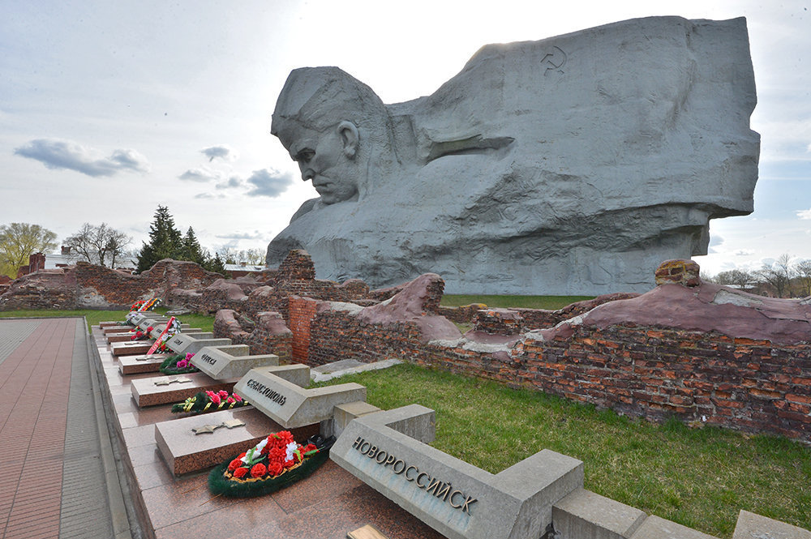
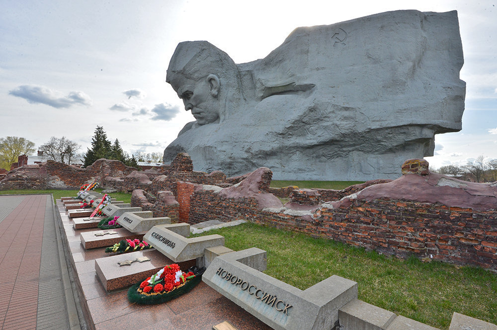
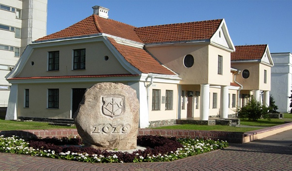
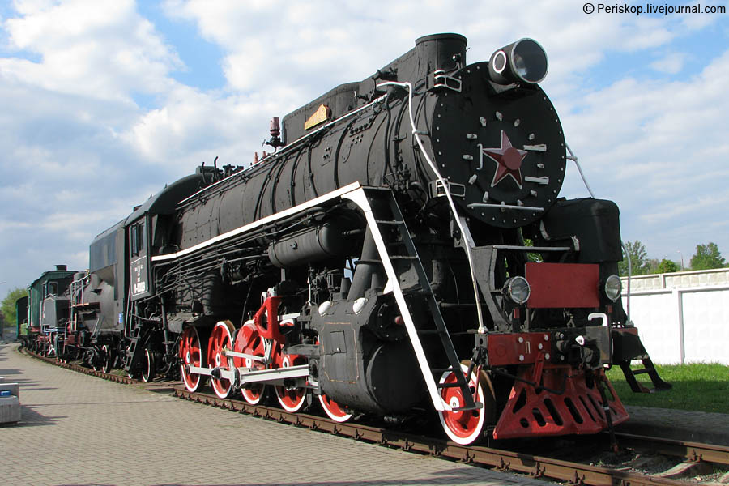

Впечатляющие руины крепости XIX века, где сейчас расположен музей и бетонный монумент в стиле брутализма.

Культура
Выберете направление:
Впечатляющие руины крепости XIX века, где сейчас расположен музей и бетонный монумент в стиле брутализма.
Единственный в Беларуси музей, где экспонируются произведения искусства и предметы антиквариата, конфискованные брестскими таможенниками при попытке незаконного вывоза их за рубеж.
Брестский железнодорожный музей — технический музей, расположенный в городе Брест, посвящённый железным дорогам, подвижному составу и всему, что с этим связано.
